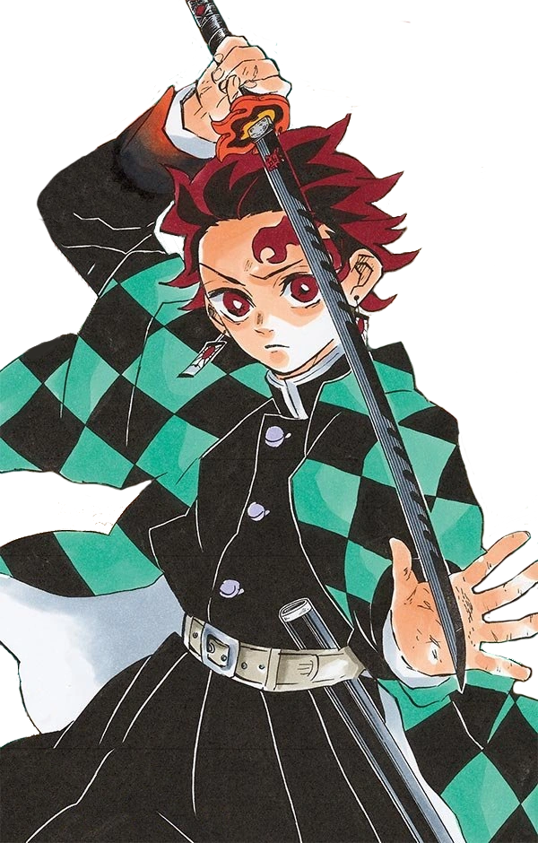

O protagonista principal de Demon Slayer. Ele é um Caçador de Demônios do Corpo de Caçadores de Demônios, ao qual se juntou para encontrar uma cura para transformar sua irmã, Nezuko Kamado , de volta em humana e para caçar e matar onis. Mais tarde jurou derrotar Muzan Kibutsuji , o Rei Demônio, a fim de impedir que outros sofressem o mesmo destino que ele sofreu.
Tanjiro era carvoeiro e vivia com sua mãe e irmãos, até que um dia, ao sair para vender carvão na vila próxima, sua família foi massacrada por Muzan. Durante esse massacre sua irmã Nezuko foi transformada em um Oni.